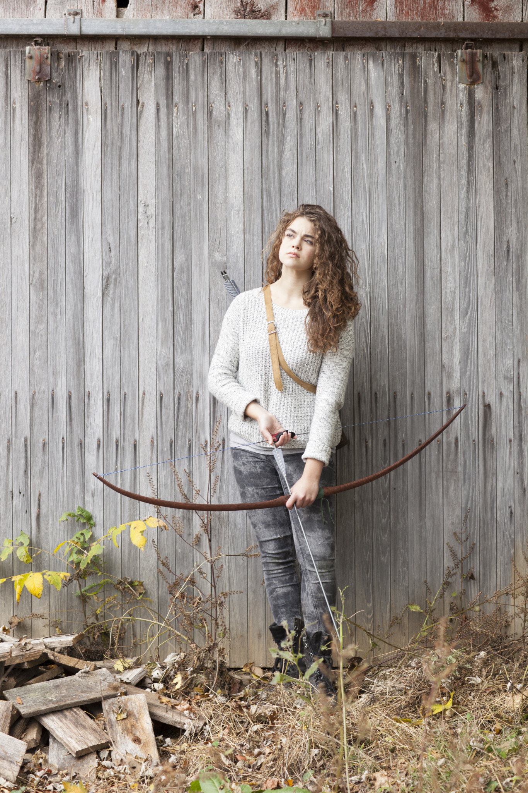
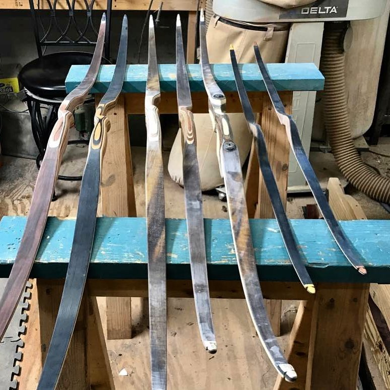

Traditional Archery
Close your eyes and imagine a simple bow. No sights, no gadgets, just a sleek design. The bow you’re picturing is likely a traditional bow – timeless, authentic and tons of fun to shoot. And it’s time for you to give it a try!
You’ve probably seen traditional bows in movies like “The Hunger Games” and the “Avengers” series. Hollywood loves traditional equipment because it is easily recognizable and has an undeniable aesthetic quality.
Traditional bows are beautiful and shooting them is an organic experience because there are no gadgets to interrupt the flow of your shooting. While it is easier to be accurate with a compound bow, traditional bows offer a lot of fun in exchange for immediate accuracy.
WHY TRADITIONAL?

Traditional archery is all about having fun, getting back to archery’s roots and challenging your archery skills. You can shoot a bow that’s carved from a tree or one of the many modern traditional bows. No matter what material your bow is made from, you’ll find traditional archery relaxing and fun.
There’s no pressure in traditional archery, it teaches you that you can still have fun while missing the bull’s-eye. Even without sights on the bow, you can become a proficient shooter. Top traditional archers achieve incredible accuracy – you can too with practice, lessons and the right equipment.
GET THE GEAR

Traditional archers shoot two primary bow designs – recurves and longbows. The bow you choose is largely personal preference. A recurve bow has swept tips that curve away from the archer. Recurves typically shoot arrows at faster speeds than what straight-limbed longbows can deliver. Longbows lack the recurve’s curved tips, but when strung they have a graceful bend and classic design that’s steeped in history.
How do you choose which bow to try? Visit an archery store and shoot both styles to see which you like most.
Once you have a bow, you’ll need a few accessories: arrows paired to your bow, a quiver, a finger tab and armguard for protection, and a bowstringer for removing your bowstring. Then you are ready to shoot.
HEAD OUT TO SHOOT

All the standard archery disciplines are great for a traditional bow – indoor archery, target archery, 3-D archery and field archery. A few other disciplines are especially fun with traditional equipment. Stump shooting, or “roving,” is one of the oldest archery games. And it’s simple: Find an old tree stump, pick a spot on it and shoot. You’ll feel like a little kid as you fling arrows. You can stump shoot at home or on public lands. Check with your state game agency to determine legality.
Aerial archery is another awesome way to have fun with a traditional bow. Simply toss foam discs into the air and shoot them before they hit the ground. This activity requires fast, instinctive shooting, which is perfect for the traditional bow. All you need is a safe place to launch arrows.
You’ll find great camaraderie at the archery range. Traditional archery has a tight-knit community. If you meet other traditional archers at the range, you’ll quickly learn how friendly and helpful archers are with each other, especially newcomers.
Get the most out of your archery experience by giving traditional bows a try!
#Article from Archery 360 Magazine
Read More
> Target Archery> Field Archery
> 3D Archery
> Clout Archery
> Flight Archery